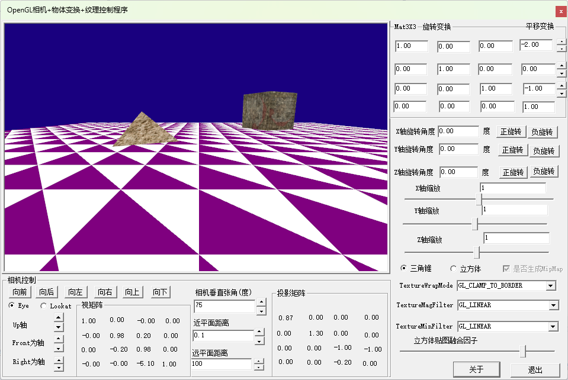
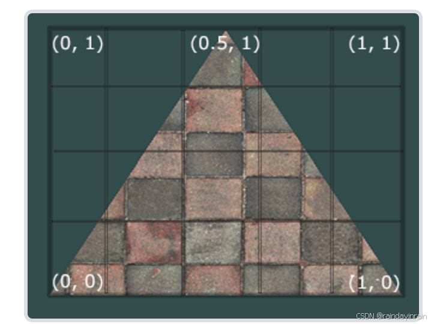

在追求真实感增强效果过程中，三维基础开发平台在纹理技术方面经过了几十年的发展，涌现了很多关于纹理的API扩展，使得程序员眼花撩轮，很多时候无从下手，特别是结合光照效果处理的时候，纹理的概念更是多的让人感到恐怖，最近几年随着光线追踪算法的兴起，基于PBR（Physically Based Rendering）渲染算法的材质纹理的大量应用，现在图形引擎的渲染效果达到了十分逼真的地步。
作者准备将图形学中纹理的相关知识分为两部分，作为初学者需要掌握纹理应用过程中的基本概念和基本程序设计过程，提高以后在掌握BPR光照模型基础上，学习基于PBR（Physically Based Rendering）渲染算法的材质纹理应用技术，这个顺序安排比较理想，本文是为了满足初学者需要讲述OpenGL程序开发过程中关于纹理技术的基础性概念与编程实践的文章，如果你对该部分比较熟悉可以放弃阅读该篇文章。
本篇文章的程序演示界面如下：源代码可以下载WinOpenGL3D_ObjectWithTexture.zip

纹理的基本概念就是将事先准备好的图片映射到三维场景中的物体表面，已达到较为逼真的效果的应用技术。学习纹理程序设计需要掌握一下基本的几个方面：
① 掌握如何将图片文件读入程序内存；
② 如何生成纹理对象，在生成纹理对象过程中需要进行哪些属性的设置；
③ 在绘制物体过程中，如何应用纹理对象。
以上三个问题，我们封装了用于处理纹理相关编程技术的GLTexture类，通过GLTexture类，我们可以很轻松的完成 ① 、② 两个步骤的相关工作，其代码如下：
x1/* GLTexture.hpp 用于创建处理C++程序开发OpenGL程序时使用纹理的类头文件，2本文件的独立头文件，本次设计仅仅依赖stb_image.h头文件，确保该头文件以本文件处于同一目录3本纹理类支持的纹理图片格式包括：JPG, PNG, TGA, BMP, PSD, GIF, HDR, PIC。4其他格式的纹理文件需要添加stb_image库的其他头文件5版权所有 刘文庆 2023.11 廊坊 */6#ifndef __GLTEXTURE_HPP__7#define __GLTEXTURE_HPP__8#include<windows.h>10#include "glad.h"11class GLTexture13{14public:15int m_TextureID;16int m_Txr_Width = 0;17int m_Txr_Height = 0;//18int m_Txr_nrChannels = 4;19enum TextureWrapMode m_WrapMode = TextureWrapMode::Repeat;21enum TextureMagFilter m_MagFilter = TextureMagFilter::Linear;22enum TextureMinFilter m_MinFilter = TextureMinFilter::Linear;23enum PixelInternalFormat m_PixelInternalFormat = PixelInternalFormat::Rgba;24bool m_IsGenerateMipmap = true;26public:28GLTexture() { m_TextureID = 0; };29~GLTexture();30void Bind(TextureUnit textureUnit = TextureUnit::Texture0)32{33glActiveTexture((int)textureUnit);34glBindTexture(GL_TEXTURE_2D, m_TextureID);35}36void Unbind(TextureUnit textureUnit = TextureUnit::Texture0)38{39glActiveTexture((int)textureUnit);40glBindTexture(GL_TEXTURE_2D, 0);41}42public:43GLuint Load_Texture_FromFile_stb(const char* _filename);44// int Load_Texture_From_File(const char* _fileName);45};46inline GLTexture::~GLTexture()47{48if (m_TextureID != 0)49{50glDeleteTextures(1, (GLuint*)&m_TextureID);51}52}53#endif54
x1//FileName:GLTexture.cpp2#include "GLTexture.hpp"4#define STB_IMAGE_IMPLEMENTATION6#include "stb_image.h"7#include "TraceMsg.h"8GLuint GLTexture::Load_Texture_FromFile_stb(const char* _filename)10{11int width, height, nrChannels;12unsigned char* data = stbi_load(_filename, &width, &height, &nrChannels, STBI_rgb_alpha);13if (data != NULL)14{15m_Txr_Width = width;16m_Txr_Height = height;17m_Txr_nrChannels = 4; //纹理内部使用RGBA模式组织像素存储18// load and create a texture19glGenTextures(1, (GLuint*)&m_TextureID); // Create the texture21// Typical texture generation using data from the bitmap23glBindTexture(GL_TEXTURE_2D, m_TextureID);24glTexImage2D(GL_TEXTURE_2D, 0, (int)m_PixelInternalFormat,26m_Txr_Width, m_Txr_Height, 0, (int)GL_RGBA, GL_UNSIGNED_BYTE, data);27if (m_IsGenerateMipmap == true)28{29glGenerateMipmap(GL_TEXTURE_2D);30m_MinFilter = TextureMinFilter::LinearMipmapLinear;31glTexParameteri(GL_TEXTURE_2D, (int)TextureParameterName::TextureMinFilter, (int)m_MinFilter);32}33else34{35glTexParameteri(GL_TEXTURE_2D, (int)TextureParameterName::TextureMinFilter, (int)m_MinFilter);36}38// 控制滤波 GL.TextureParameter()//这个函数只能在openGL 4.5以后使用，第一个参数是ID，其他与TexParameter相同39glTexParameteri(GL_TEXTURE_2D, (int)TextureParameterName::TextureMagFilter, (int)m_MagFilter);40glTexParameteri(GL_TEXTURE_2D, (int)TextureParameterName::TextureWrapS, (int)m_WrapMode);41glTexParameteri(GL_TEXTURE_2D, (int)TextureParameterName::TextureWrapT, (int)m_WrapMode);42stbi_image_free(data);43}44else45{46TraceMsgA("载入纹理文件：%s--失败", _filename);47return 0;48}49return m_TextureID;50}
GLTexture类的封装，采用了头文件可实现代码分离的形式，有两个文件组成GLTexture.hpp、GLTexture.cpp；主要原因是使用了stb_image.h库对纹理图像文件进行读取操作。关于stb_image.h库网上有很多描述，这里就直接使用了。
为了正确使用GLTexture类，需要理解OpenGL关于纹理的几个概念：
① 纹理坐标

纹理坐标一般是随着顶点坐标一起封装到VBO缓冲区中，如：
xxxxxxxxxx191float TetrahedronWithTexture::m_Vertecis[] =2{3//顶点坐标 颜色值 纹理坐标41.0f, 0.0f, -1.0f, 0.0f, 0.0f, 1.0f, 0.5f,1.0f,51.0f, 0.0f, 1.0f, 0.0f, 1.0f, 0.0f, 0.0f,0.0f,6-1.0f, 0.0f, 1.0f, 1.0f, 0.0f, 0.0f, 1.0f,0.0f,71.0f, 0.0f, -1.0f, 0.0f, 0.0f, 1.0f, 0.5f,1.0f,91.0f, 0.0f, 1.0f, 0.0f, 1.0f, 0.0f, 0.0f,0.0f,100.0f, 1.0f, 0.0f, 0.0f, 1.0f, 0.0f, 1.0f,0.0f,111.0f, 0.0f, -1.0f, 0.0f, 0.0f, 1.0f, 0.5f,1.0f,130.0f, 1.0f, 0.0f, 0.0f, 1.0f, 0.0f, 0.0f,0.0f,14-1.0f, 0.0f, 1.0f, 1.0f, 0.0f, 0.0f, 1.0f,0.0f,151.0f, 0.0f, 1.0f, 0.0f, 1.0f, 0.0f, 0.5f,1.0f,17-1.0f, 0.0f, 1.0f, 1.0f, 0.0f, 0.0f, 0.0f,0.0f,180.0f, 1.0f, 0.0f, 0.0f, 1.0f, 0.0f, 1.0f,0.0f19};
纹理坐标一般落在（0，1）范围内，其对应纹理图像的坐标关系如上图所示。
② 纹理环绕模式：纹理环绕概念对应如果纹理坐标大于1或小于0情况下，如何对物体表面进行纹理图像的映射方式，分为GL_TEXTURE_WRAP_S(纵坐标)和GL_TEXTURE_WRAP_T(横坐标)两种情况分别设置，可选设置参数有：
GL_REPEAT 重复绘制
GL_CLAMP_TO_BORDER 使用边缘像素填充
GL_MIRRORED_REPEAT 重复绘制时对纹理图像进行翻转
GL_CLAMP_TO_BORDER_ARB 使用指定的边界颜色
③ 纹理放大模式与缩小过滤模式：是指纹理映射到物体表面所对应的屏幕尺寸范围时，当物体表面屏幕尺寸大于纹理图像尺寸会小于纹理图像尺寸时，纹理图像对应屏幕像素的计算方法，对应GL_TEXTURE_MAG_FILTER(放大)、 GL_TEXTURE_MIN_FILTER(缩小)两种模式，可选设置参数有：
对于 GL_TEXTURE_MAG_FILTER(放大)过滤模式：
GL_NEAREST 最近点采样
GL_LINEAR 线性差值
GL_TEXTURE_MIN_FILTER(缩小)过滤模式：
GL_NEAREST 最近点采样
GL_LINEAR 线性差值
GL_NEAREST_MIPMAP_NEAREST 使用最邻近的mipmap级别,使用邻近插值进行纹理采样
GL_LINEAR_MIPMAP_NEAREST 使用线性差值的mipmap级别,使用邻近插值进行纹理采样
GL_NEAREST_MIPMAP_LINEAR 使用最邻近的mipmap级别,使用线性插值进行纹理采样
GL_LINEAR_MIPMAP_LINEAR 使用线性差值的mipmap级别,使用线性插值进行纹理采样
④ GL_GENERATE_MIPMAP多级渐近纹理：OpenGL生成纹理对象时，可是自动生成多个尺寸逐次递减的多级渐近纹理，当纹理映射区域小于纹理图片时，自动使用较小的纹理图片进行映射，这种技术称为MIPMAP多级渐近纹理技术。
void glTexImage2D(GLenum target, GLint level, GLint internalformat, GLsizei width, GLsizei height, GLint border, GLenum format, GLenum type, const void *pixels);函数的第二个参数就是填充MIPMAP多级纹理技术的层级图片的，一般情况下，OpenGL如果通过glGenerateMipmap(GL_TEXTURE_2D)函数设置MIPMAP模式，会自动生成
⑤ 纹理单元 GL_TEXTURE0~GL_TEXTURE16
OpenGL程序允许对一个渲染平面使用多个纹理图片进行贴图，最终的效果时多个纹理融合的结果，这么多个纹理图片称为纹理单元，每种显卡允许的纹理单元的数量不尽相同，通常不会低于16个纹理单元，对应GL_TEXTURE0~GL_TEXTURE16。其中GL_TEXTURE0纹理单元处于自动激活状态，所以生成纹理时glBindTexture(GL_TEXTURE_2D, m_TextureID);自动将m_TextureID纹理对象绑定到了GL_TEXTURE0号纹理单元上，如果要设置其他纹理单元，需要通过glActiveTexture(GL_TEXTURE1); 函数激活纹理单元，然后glBindTexture(GL_TEXTURE_2D, m_TextureID);将纹理对象绑定到该纹理单元上。
我们设计的class GLTexture类提供的void Bind(TextureUnit textureUnit = TextureUnit::Texture0)函数带了纹理单元参数，只是默认对GL_TEXTURE0进行绑定。
有了GLTexture纹理类的封装，在OpenGL程序中使用纹理就变得简单了。下面我们以绘制CubeObjectWithPositionTexture立方体对象为例讲述纹理类的使用过程：
① 定义带纹理坐标的数据集
xxxxxxxxxx1441float vertices[] = {2-0.5f, -0.5f, -0.5f, 0.0f, 0.0f,30.5f, -0.5f, -0.5f, 1.0f, 0.0f,40.5f, 0.5f, -0.5f, 1.0f, 1.0f,50.5f, 0.5f, -0.5f, 1.0f, 1.0f,6-0.5f, 0.5f, -0.5f, 0.0f, 1.0f,7-0.5f, -0.5f, -0.5f, 0.0f, 0.0f,8-0.5f, -0.5f, 0.5f, 0.0f, 0.0f,100.5f, -0.5f, 0.5f, 1.0f, 0.0f,110.5f, 0.5f, 0.5f, 1.0f, 1.0f,120.5f, 0.5f, 0.5f, 1.0f, 1.0f,13-0.5f, 0.5f, 0.5f, 0.0f, 1.0f,14-0.5f, -0.5f, 0.5f, 0.0f, 0.0f,15-0.5f, 0.5f, 0.5f, 1.0f, 0.0f,17-0.5f, 0.5f, -0.5f, 1.0f, 1.0f,18-0.5f, -0.5f, -0.5f, 0.0f, 1.0f,19-0.5f, -0.5f, -0.5f, 0.0f, 1.0f,20-0.5f, -0.5f, 0.5f, 0.0f, 0.0f,21-0.5f, 0.5f, 0.5f, 1.0f, 0.0f,220.5f, 0.5f, 0.5f, 1.0f, 0.0f,240.5f, 0.5f, -0.5f, 1.0f, 1.0f,250.5f, -0.5f, -0.5f, 0.0f, 1.0f,260.5f, -0.5f, -0.5f, 0.0f, 1.0f,270.5f, -0.5f, 0.5f, 0.0f, 0.0f,280.5f, 0.5f, 0.5f, 1.0f, 0.0f,29-0.5f, -0.5f, -0.5f, 0.0f, 1.0f,310.5f, -0.5f, -0.5f, 1.0f, 1.0f,320.5f, -0.5f, 0.5f, 1.0f, 0.0f,330.5f, -0.5f, 0.5f, 1.0f, 0.0f,34-0.5f, -0.5f, 0.5f, 0.0f, 0.0f,35-0.5f, -0.5f, -0.5f, 0.0f, 1.0f,36-0.5f, 0.5f, -0.5f, 0.0f, 1.0f,380.5f, 0.5f, -0.5f, 1.0f, 1.0f,390.5f, 0.5f, 0.5f, 1.0f, 0.0f,400.5f, 0.5f, 0.5f, 1.0f, 0.0f,41-0.5f, 0.5f, 0.5f, 0.0f, 0.0f,42-0.5f, 0.5f, -0.5f, 0.0f, 1.0f43};44
② 定义具有处理纹理功能的Shader程序
x1const std::string m_VertexShaderWithPosTex = R"(2#version 330 core3layout(location = 0) in vec3 aPos;4layout(location = 1) in vec2 aTexCoord;5out vec2 TexCoord;7uniform mat4 model;9uniform mat4 view;10uniform mat4 projection;11void main()13{14gl_Position = projection * view * model * vec4(aPos, 1.0f);15TexCoord = vec2(aTexCoord.x, aTexCoord.y);16}17)";18const std::string m_FrageShaderWithPosTex = R"(20#version 330 core21out vec4 FragColor;22in vec2 TexCoord;24// texture samplers26uniform sampler2D texture1;27uniform sampler2D texture2;28uniform float mixFactor;29void main()30{31// linearly interpolate between both textures (80% container, 20% awesomeface)32FragColor = mix(texture(texture1, TexCoord), texture(texture2, TexCoord), mixFactor);33}34)";
③定义纹理对象并生成VBO
xxxxxxxxxx1141VAOWithVBOandEBO m_VaoWithVbo;2GLTexture m_texture1, m_texture2;3void InitializeData()4{5m_shader.InitializeShaderWithString(m_VertexShaderWithPosTex.c_str(),6m_FrageShaderWithPosTex.c_str());7std::string _pathStr = Win::GetCurrentModuleDirectory();9m_texture1.Load_Texture_FromFile_stb(std::string(_pathStr+"\\milla.bmp").c_str());11m_texture2.Load_Texture_FromFile_stb(std::string(_pathStr + "\\wall.bmp").c_str());12m_VaoWithVbo.AddVBO({ vertices }, { 5 * 36 }, BufferUsageHint::StaticDraw,14{ {3,2} });15}
④ 使用纹理类绘制立方体
x1void Draw(Camera& _camera,float _MixFactor=0.5)2{3m_shader.Use();4m_shader.setInt("texture1", 0);//设置Shader程序中uniform sampler2D texture1;变量对应GL_TEXTURE05m_shader.setInt("texture2", 1);//设置Shader程序中uniform sampler2D texture2;变量对应GL_TEXTURE26m_shader.setFloat("mixFactor", _MixFactor);7m_texture1.Bind(TextureUnit::Texture0);//将m_texture1纹理对象绑定到GL_TEXTURE08m_texture2.Bind(TextureUnit::Texture1);//将m_texture2纹理对象绑定到GL_TEXTURE29this->RotateAngleY(glm::radians(0.05f));11// note: currently we set the projection matrix each frame, but since the projection matrix rarely changes it's often best practice to set it outside the main loop only once.14m_shader.SetMat4("projection", _camera.GetProjectionMat());15m_shader.SetMat4("model", GetMat());16m_shader.SetMat4("view", _camera.GetViewMat());17m_VaoWithVbo.DrawArrays(PrimitiveType::Triangles, 0, 36);19m_shader.UnUse();20m_texture1.Unbind();21m_texture2.Unbind();22}
OpenGL纹理相关技术很复杂，本文章只是涉及到最基本的纹理技术相关概念，OpenGL近20多年的发展各显卡厂家关于OpenGL的扩展多集中在高效处理纹理方面，你可以检查glad关于纹理扩展大概占了扩展总数的80%。近几年追着GPU的发展OpenGL扩展和Vulkan扩展逐步集中在BPR全局光照模型与基于PBR（Physically Based Rendering）渲染算法的材质纹理绩效增强Shader算法领域。关于纹理的高级应用，作者准备放到BPR全局光照模型相关技术后面描述。
希望我的文章不近能够学到OpenGL程序设计技术，还能学到程序设计架构的基础性思维。